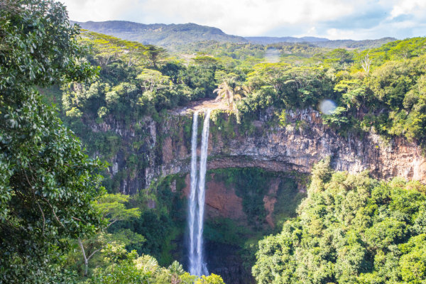

Sobre o Observatório Amazônia
O Observatório Amazônia é um projeto criado por alunos do 3º ano C do Colégio Militar Tiradentes em 2024. Nosso objetivo é promover a conscientização sobre a importância da Amazônia, destacando sua biodiversidade, cultura e os desafios que enfrenta.
Através da educação e do engajamento, buscamos contribuir para a preservação deste valioso patrimônio natural. Junte-se a nós nessa missão de cuidar da Amazônia!

Título da Imagem
descrição da imagem.
Título da Imagem
descrição da imagem